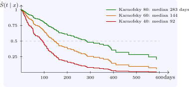

8.5 Adjusted survival curves
A fitted Cox model with the Breslow baseline gives a predicted survival curve for any covariate pattern, \(\hat S(t \mid x) = \hat S_0(t)^{\exp (\hat \beta ^{\mathsf T}x)}\). Plotting curves for chosen patterns shows the size of effects in terms patients and clinicians understand (Figure 8). For a patient with a squamous tumour on the standard regimen, the predicted median survival is \(92\) days with a Karnofsky score of \(40\), \(144\) days with \(60\), and \(283\) days with \(80\); the predicted six-month survival is \(19\%\), \(41\%\) and \(62\%\).

Questions on this section
Stuck on something here? Ask below and it stays attached to this topic.